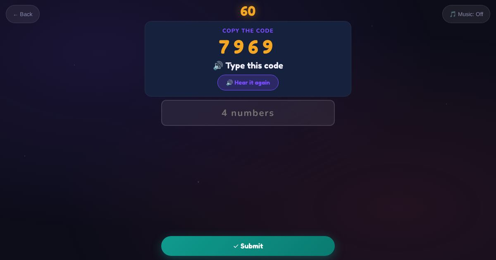

For teachers and tutors
About Safe or Private
Online safety with yes or no answers. The learner decides whether something is safe to share, like a first name, a class day or a favourite colour, or must stay private, like a bank PIN, a password, a card number or a photo of a passport. Other rounds practise copying a 4-digit code, like a verification code sent by SMS.

How to play
- Listen to what it is.
- Decide if you can share it.
- Tap yes or no, or type the code.
Play it as a class
Choose Safe or Private in the Teacher Game, then talk about scams before setting up banking or myGov apps.